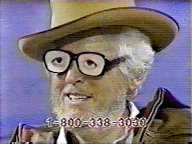
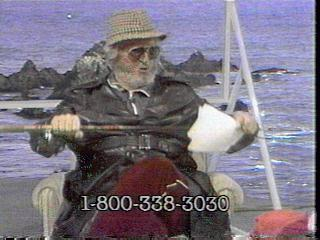
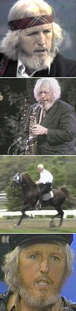
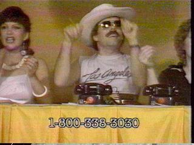
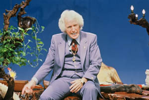
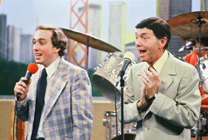
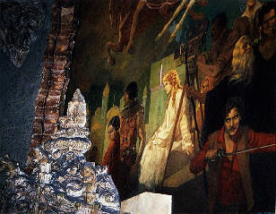

|
Dr. Gene ScottYou're
watching Dr. Gene Scott's program, already in progress. "You ever meet Christians? You wish you could shove a pipe in their mouth. Anything to shut them up." He's unpredictable, entertaining, ridiculous and brilliantly inspired. There he is again: puffing a cigar, harassing a visibly shaken staff, delivering hateful missives against the FCC. He's the Bill Hicks of adult preachers, cracking jokes with impeccable timing and delivery. Everything about him is immaculately watchable, and there's no denying he's smart and fuckin' funny. His tight, thin-lipped sneer and shocking blue eyes make you wonder if you personally aren't his next target. Few can turn themselves away from this man's power. The Dr. Gene Scott suite of programs is broadcast in eight languages, in 180 countries, over radio and television stations twenty four hours a day throughout the world. There's even a live Internet video stream. While other pastors denounce homosexuality, abortion, adultery, profanity and drinking, Scott refuses to condemn such behavior. He leaves worshipers free to make their own choice without coercion. "I don't ask you to change when you come here," he instructs the congregation. "I take you as you are, as God takes me as I am." His personal enterprises run the gamut, across the Bishop Dr. Gene Scott Corporation, Dr. Gene Scott Incorporated., Dr. Gene Scott Consultants Incorporated, Gene Scott Travel Incorporated, W. Eugene Scott, Ph.D. Incorporated, the Gene Scott Evangelistic Association, the Wescott Christian Center, the Los Angeles University Cathedral, Faith Center, the Faith Broadcasting Network, and the University Network - among others. When he was younger, Doctor William Eugene Scott kinda-sorta resembled actor Michael Moriarty. Over time, his appearance changed before our eyes. His hair grew longer, his beard fluffed out, his voice developed an insistent gravel. These days, with a Costa Rican cigar wedged in his mouth and a necktie bandana wrapped 'round his head, Dr, Scott looks a bit more like Kenny Rogers. Only instead of singing about knowing when to fold, he plays the saxophone, taking time out to call lesser musicians like Bill Clinton "honkers." Dr. Scott wants you to get on the telephone and hand over ten percent of your weekly income. The average member's contribution is reportedly $350.00 a month. "I want 300 people to give $1,000 by June 30 to humiliate Satan's efforts to destroy us," Dr. Scott commanded in a Web site missive. "I also want 700 to commit to $10,000 by Christmas. I've been trying to lighten the staff load for five years! I won't take responsibility for things I have no assurance I'll ever see!" The price of membership is steep, and measured in what he calls first fruits: returns on any form of income (an investment, a pay raise, a second job, a tax refund, Lotto winnings). If you're out of work, you give the first week's unemployment check. For non-givers, Dr. Scott warns: "If you get too smart with God, he might let you live this next year without him so you can see the difference." People listen and obey, to the tune of uncounted millions each year. "Closet" watchers of The Festival of Faith at one point included Johnny Carson, Art Carney, Gene Hackman, Paul Newman, Robert Redford, and Burt Reynolds. They'd sit around in a group watching Dr. Scott, and then call the number on the screen. Celebrities were enthused: this was unlike anything they'd ever seen on television program, and the host was charismatic. "In every way possible within the boundaries of God's word," Dr. Scott says, "I have tried to separate from the television evangelists' image. Television evangelism has become a phrase that can only become analogized to nigger, kike, beaner and other epithets designed to demean and create a perceptual set of a lesser-quality being." Dr. Scott enjoys chauffeured limousines, Lear jet travel, a mansion in Pasadena, a fleet of racing-horse ranches, and round-the-clock bodyguard protection. Dr. Scott is - without question - the greatest living minister and religious instructor on television, but nothing infuriates him more than to be lumped alongside the likes of Jerry Falwell, Jim Bakker or Jimmy Swaggart. In fact, he sued Time magazine for referring to him as a televangelist. In 1980, celebrated German director Werner Herzog was so taken with Dr. Scott that he made him the subject of a TV documentary. God's Angry Man showcases Scott's ability to collect several hundred thousand dollars in less than half an hour. It was a film slanted toward monomania and American malaise, and largely a piece about greed and currency. Talking quietly about his personal and professional life, Scott seems a genuine and even vulnerable person. But on television, Dr. Scott becomes Mr. Hyde - coaxing, cajoling, exhorting, pleading and even whining. When he reads off the dollar amounts phoned into the Festival of Faith, not one contribution is less than three figures. During a particularly slow night, Scott will become so angry he chooses to punish his audience by refusing to say another word. The tension among the pledge-break phone volunteers in the blue-hued broadcast studio is palpable. "A skinflint may get to Heaven, but what awaits him are a rusty old halo, a skinny old cloud, and a robe so worn it scratches. First-class salvation costs money."
Dr. Scott spends weeks and months at a time on marvelously conspiratorial topics: the Pyramids, Atlantis, Roswell UFO's, Stonehenge, the Amityville poltergeists - even the Philadelphia Experiment. During Sunday sermons, Scott admonishes his congregation not to seek God's blessing from a priest, the Pope or a place of worship. "And you're sure not going to get it from a motel with Jimmy Swaggart," he cracks. "I'm not selling forty-pound Bibles, or water from Jordan, or 4,000 plastic crosses made by the Japanese and sold to Arabs. I don't send out 'healing cloths' or tear up my shirt. I say: what's what I've done worth? Whatever the meal I've fed you is worth, pay up. I'm not trying to save anybody. I think if you reject Christianity, you should do it intelligently."
Dr. Scott insists that he has no property, investments, stocks or bonds - and that everything he owns is in the name of the church. His contract calls for a $1 annual salary, plus unlimited expenses. He refuses to open the church's books to the scrutiny of independent auditors or follow accounting safeguards. He's defeated repeated attempts by the federal government to examine his church's operations simply by directing contributors to sign pledge slips which specifically state Dr. Scott can spend the money however he likes. Sometimes, he'll preach about his cigar recommendations. "Not the least of the reasons I like Costa Rican cigars is the ease with which you can remove its label. How many times have you removed a label in order to smoke the last part of the cigar (the best part) and had it tear the cigar wrapper? Try one with the Maduro wrapper for a rich mellow taste. And remember: never inhale cigar smoke." Wanna go to his church and watch him do his thing in person? Sorry, members only. Glenn F. Buntin, from his Times essay on what it's like to be there:
When the curtain begins to rise, congregation members leap to their feet and cheer wildly. Before them appears their master. After several seconds of enthusiastic applause, a rock band belts out praise to Jesus as Scott sits impassively on a blue-cushioned stool until the singing ends. Among the tunes Scott occasionally orders up is "Kill a Pissant for Jesus." He writes in red, blue, green and black felt pens, using the different colors to strike previous markings instead of using an eraser. Within an hour, his whiteboard is streaked with arrows, circles, lines and indecipherable words that become nearly impossible to follow. The lecture suddenly is reduced to a mind-numbing blur which virtually forces the audience to accept his ecclesiastical monopoly. The donation plates come out. Dr. Scott doesn't have to remind them what to do. They'll tithe, or they can all look forward to "sliding down the slimy chute straight to Hell." Dr. Gene Scott died of a stroke on 21 February 2005 in Los Angeles. He was 75. |
 Herzog
sketches an intelligent, exhausting, intense man who harangues his listeners
to send in their money. Off camera, Dr. Scott seems convincingly lonely and
vulnerable, but ever driven toward the Lord's work. One minute he's quoting
scriptures, the next he's blasting the Russians. "Nuke 'em in the name
of Jesus!" he bellowed at viewers during the Gulf War.
Herzog
sketches an intelligent, exhausting, intense man who harangues his listeners
to send in their money. Off camera, Dr. Scott seems convincingly lonely and
vulnerable, but ever driven toward the Lord's work. One minute he's quoting
scriptures, the next he's blasting the Russians. "Nuke 'em in the name
of Jesus!" he bellowed at viewers during the Gulf War.